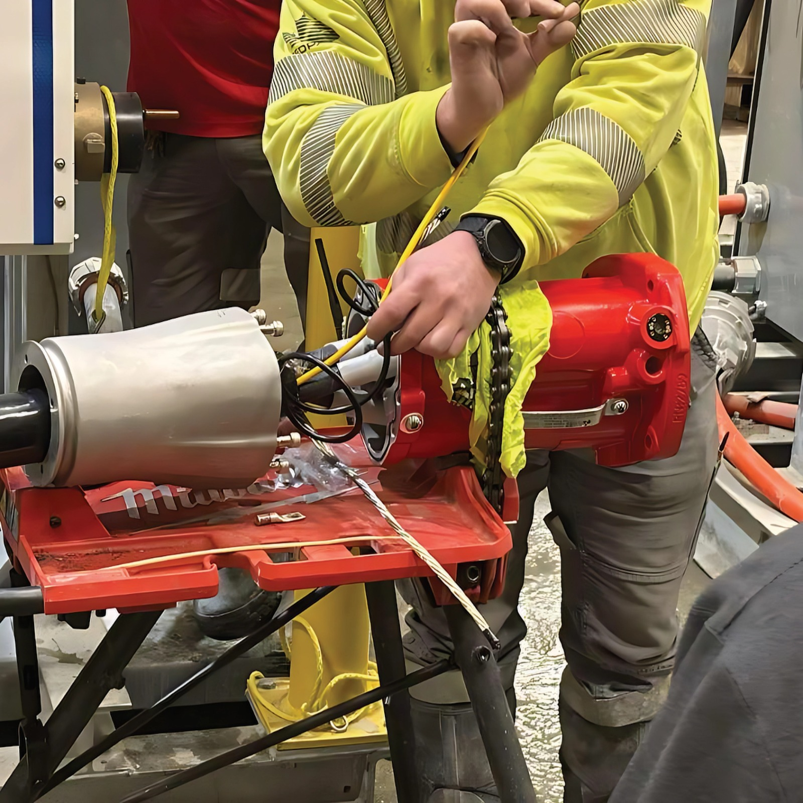

Launched 11kV connector followed by 3.3kV connector.
Research & Development
Powering the Way Forward
Meeting operational targets in mining and tunnelling comes down to safe, reliable equipment and machinery. Designed for harsh climates, the KonNx product range offers broad-spectrum voltage capabilities, advanced technical performance, and superior safety features. From our pioneering genderless coupler technology to successfully deploying the industry’s first 35,000V (35kV) electrical connector, KonNx continues to drive innovations that exceed industry benchmarks.
Product Innovations
-
1985
-
Developed the world’s first 22kV for the African mining market.
1990
-
Updated designs for 3.3kV, 6.6kV, 8kV, 11kV, 15kV, 22kV, 25kV connectors.
1997–2008
-
Developed the industry’s first 35kV flameproof connector.
2013
-
Removable flange designed exclusively for flameproof 11kV connector.
2016
-
Expanded Beam Fibre Optics technology incorporated into high-voltage connectors.
2016
-
Updated Quick Release receptacle with safe, ergonomic handle.
2019
-
R&D team designed a 60A plug and receptacle to handle 90A.
2019
-
LED Live Line indicators replaced neon bulbs on high-voltage connectors.
2020
-
Launched low-voltage aluminium restrained range for non-Ex applications.
2022

Safety & Compliance
All KonNx products are tested against international certifications and safety standards. With every new product release or modification, stress-tests are conducted at our in-house testing facility, ensuring peak performance and the highest operational safety in hazardous environments. The low-voltage and high-voltage ranges are equipped with critical safety features, including arc-extinguishing insulation, full phase-to-phase segregation with earth, partial discharge monitoring, and LED Live Line Indicators.